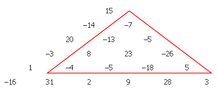

In a triangular array of positive and negative integers, we wish to find a sub-triangle such that the sum of the numbers it contains is the smallest possible.
In the example below, it can be easily verified that the marked triangle satisfies this condition having a sum of −42.

We wish to make such a triangular array with one thousand rows, so we generate 500500 pseudo-random numbers s k in the range ±2 19 , using a type of random number generator (known as a Linear Congruential Generator) as follows:
t
:= 0
for k = 1 up to k = 500500:
t
:= (615949*
t
+ 797807) modulo 2
20
s
k
:=
t
−2
19
Thus: s 1 = 273519, s 2 = −153582, s 3 = 450905 etc
Our triangular array is then formed using the pseudo-random numbers thus:
Sub-triangles can start at any element of the array and extend down as far as we like (taking-in the two elements directly below it from the next row, the three elements directly below from the row after that, and so on).
The "sum of a sub-triangle" is defined as the sum of all the elements it contains.
Find the smallest possible sub-triangle sum.
dev: solve(rows=5) → █
main: solve(rows=1000) → █
extra: solve(rows=1500) → █
Solution pending... the mathematician is still thinking.
Nothing here yet - come back when the dust has settled.